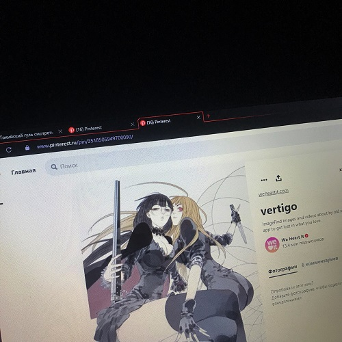

Русский хайперпоп исполнитель, настоящее имя - Даниил Навекаров.
Треки rizza, как и сам исполнитель, были популярны и до дуэта со sqwore. Но стремительно набирать аудиторию исполнитель начал с трека
"Холодное оружие". О самом исполнителе известно мало. Получилось найти только имя и немного информации о создании дуэта со sqwore.

Наиболее известные треки: "Vertigo", "Плачь", "Холодное оружие".